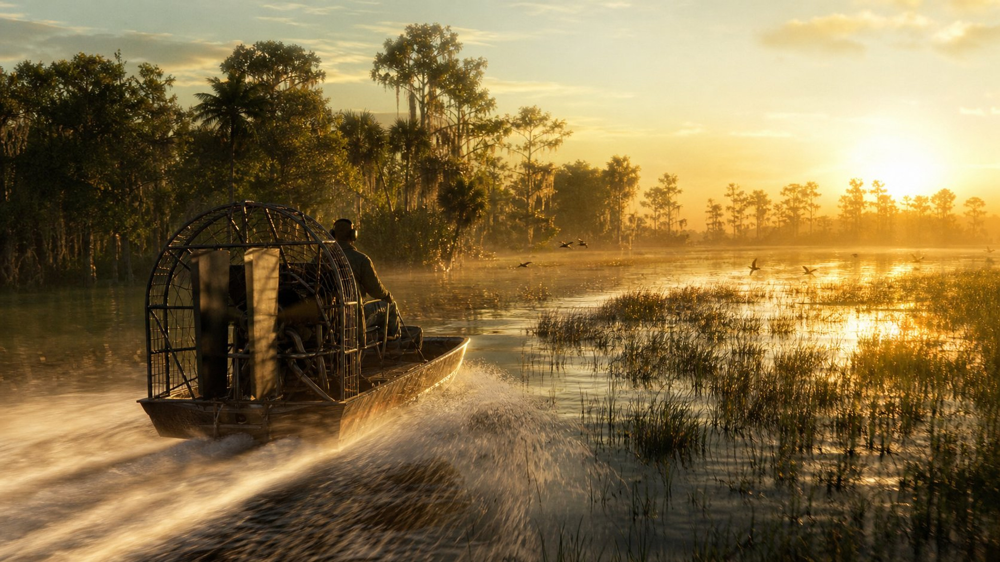
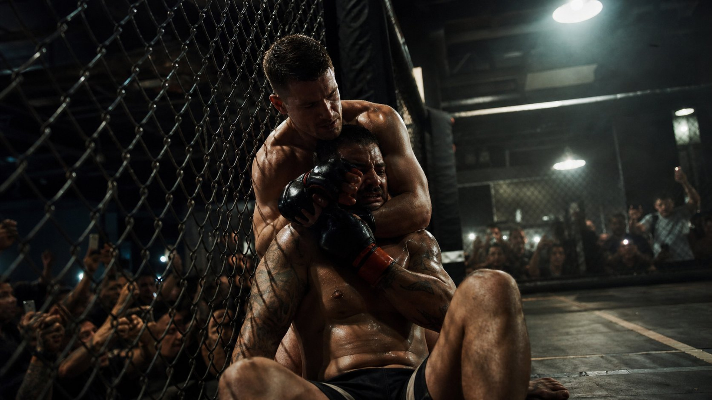
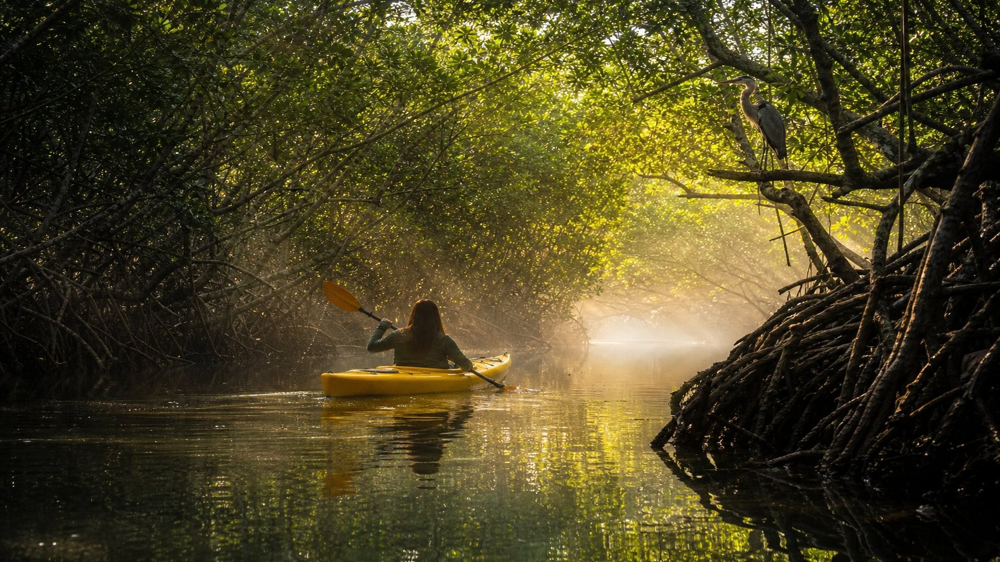
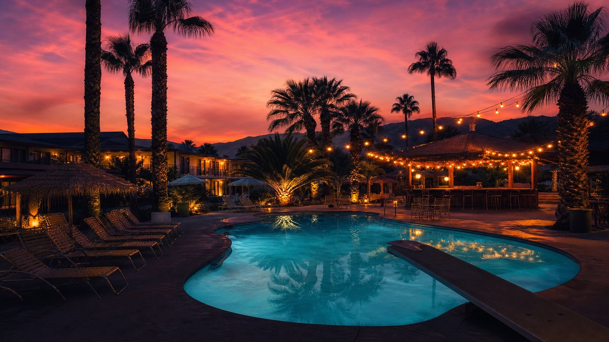
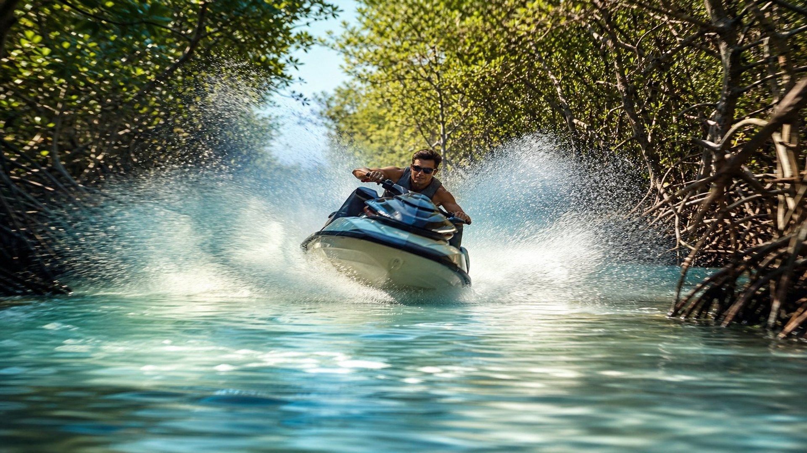
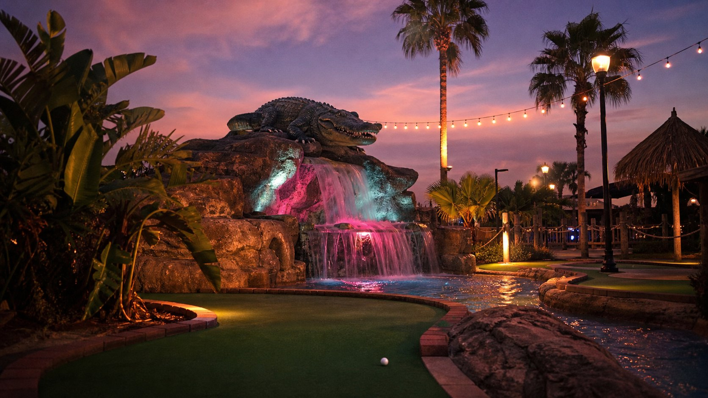

S4 · G4 · Loisirs
Activités et mini-jeux
Pêche au Mont Kalaga, chasse dans les Grassrivers, cage de MMA, mini-golf, kayak et jet-ski : Leonida se joue aussi sans mission. Voici ce qui est confirmé, ce qui rapporte, et ce qui reste à vérifier.
Ce que Rockstar a confirmé
Trois activités au moins sont attestées par une source primaire — site officiel, capture officielle ou déclaration de Rob Nelson. Le reste est décrit par la presse à partir des trailers.
Pêche OFFICIEL
Parc national du Mont Kalaga, depuis un bateau, un kayak, un ponton ou la berge. ACT-01
Chasse OFFICIEL
Mont Kalaga et Grassrivers. ACT-02
Mini-golf PRESSE · 18/11
Première apparition dans la série, sur un parcours à thème alligator. ACT-03
ACT-02

Sport, salle et combat
ACT-04Salle de sport : soulever des poids à la plage en Jason, frapper le sac en Lucia. Les séances améliorent santé et endurance — l'entraînement a un effet de gameplay, pas seulement cosmétique.ACT-05Combat en cage (MMA) : Lucia affronte des adversaires dans une cage, et l'on peut parier sur des combats. Activité rémunératrice.ACT-09Sports de rue : basket sur les toits et chez Jason, football de plage, billard et fléchettes dans les bars.ACT-09Stand de tir et catch de jardin repérés dans les images de présentation.

Nature : pêche, chasse, kayak, plongée
Sur l'eau
- Kayak dans les rivières du parc national.
ACT-08 - Jet-ski sur la côte et aux Keys.
ACT-08 - Hydroglisseur dans les marais, lié aux contrats fauniques.
- Pêche depuis un bateau au large.
ACT-01
Sous et dans la nature
- Plongée autonome pour l'exploration sous-marine.
ACT-08 - Bestiaire de plus de 170 espèces à répertorier.
ACT-06 - Chasse au Mont Kalaga et dans les Grassrivers.
ACT-02
ACT-10
Course et adrénaline
| Discipline | Lieu | Statut | Réf. |
|---|---|---|---|
| Course de rue | Vice City | PRESSE · 18/11 | ACT-07 |
| Moto et quad hors piste | Thrillbilly Mud Club, Mont Kalaga | PRESSE · 18/11 | ACT-07 |
| Circuit | Port Gellhorn | PRESSE · 18/11 | ACT-07 |
| Rencontres de voitures | Stockyard et Vice City | PRESSE · 18/11 | ACT-11 |
| Base-jump et parachute | Toits de Vice City | PRESSE · 18/11 | ACT-11 |

Ce qui rapporte vraiment
Braquages
La source principale de revenus selon la presse, très au-dessus des activités. Voir Économie
Combat en cage
Gain immédiat, sans matériel, et lié à l'entraînement. ACT-05
Courses
Gains réels mais barèmes non publiés : à traiter comme un complément.
Ce qui reste à vérifier
Repéré mais non confirmé jouable
- Tennis sur les courts visibles dans les trailers.
- Zoo, base-jump et parachute.
- Catch de jardin et tournois de stand de tir.
- Gains par course, par combat ou par contrat faunique : aucun barème officiel.
PRESSE · 18/11 À confirmer après le 19/11/2026.

Sorties et vie sociale
ACT-09Boîtes de nuit et clubs, bars, plages : les sorties servent autant à l'ambiance qu'aux contacts.ACT-09Télévision et jeux vidéo in-game : des contenus entiers existent à l'intérieur du jeu, à regarder depuis un canapé.ACT-09Photographie et réseaux sociaux in-game via le téléphone, avec défis de stunt et de notoriété.ACT-03Mini-golf et billard : les deux activités les plus « détente » du jeu, jouables à deux.